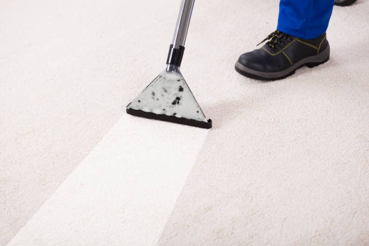
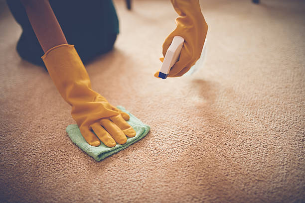
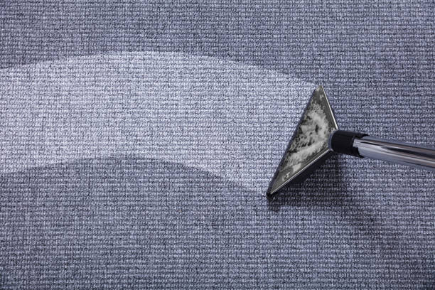
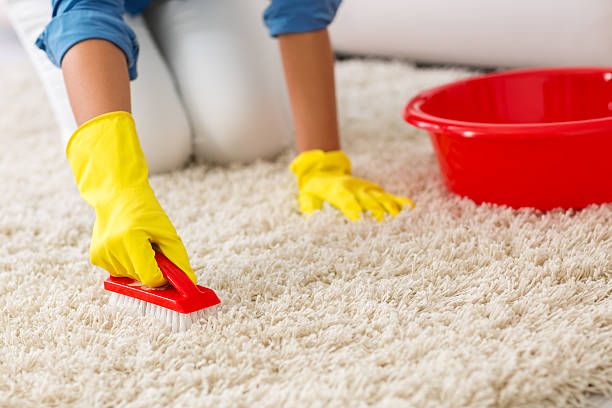
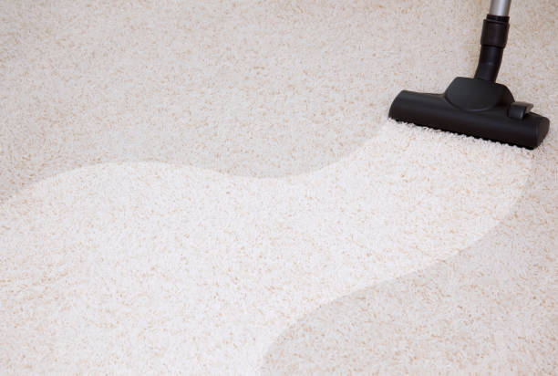
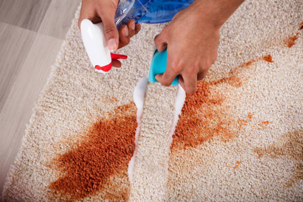

Experience luxury carpet care tailored for high-end homes . Our specialized services ensure your carpets remain pristine and elegant.
Experience unparalleled luxury carpet care in Usa - Nationwide. Our bespoke services cater to high-end homes, ensuring your carpets receive the premium treatment they deserve to maintain their elegance.
Residential & commercial Carpet Cleaning
Quality services at affordable prices
Immediate 24/ 7 emergency services


Deep carpet cleaning is essential for maintaining the beauty and longevity of your carpets, especially in a bustling city like Usa - Nationwide. At our company, we understand that carpets can accumulate dirt, allergens, and odors over time, making it vital to invest in a thorough cleaning. Our deep cleaning services utilize advanced methods and eco-friendly products to ensure that your carpets are not only pristine but also safe for your family and pets.
When choosing our deep carpet cleaning services, you are opting for quality, reliability, and expertise. Our trained professionals employ cutting-edge equipment that penetrates deep into the fibers of your carpet, removing embedded dirt and grime that regular vacuuming simply cannot touch. We prioritize customer satisfaction and use methods that are scientifically proven to enhance the cleanliness and appearance of your carpets.
Why should you choose us for your deep carpet cleaning needs? Our commitment to using non-toxic, eco-friendly products means that you can rest easy knowing that your indoor air quality is preserved without compromising on cleanliness. Additionally, our highly-skilled technicians have years of experience, bringing their expertise to every job, ensuring that your carpets receive the highest level of care.
, where the hustle and bustle can lead to increased wear and tear on your flooring, make the smart choice for your home or office. Schedule a deep carpet cleaning with us today and experience the fresh, new feel of immaculate carpets.

At Carpet Cleaning, we understand the importance of protecting both your home and the planet. Our Eco-Friendly Carpet Cleaning Services in Usa - Nationwide utilize non-toxic, biodegradable cleaning products that are safe for children, pets, and the environment. We believe that a clean carpet shouldn't come at the expense of your health or the Earth. By choosing our eco-friendly solutions, you can enjoy a deep clean that reduces allergens and harmful substances while supporting sustainable practices. Our trained technicians are dedicated to providing exceptional results without compromising safety or quality.

Having pets brings joy and companionship, but it can also lead to unfortunate stains and odors on your carpets. At Carpet Cleaning, we specialize in pet stain and odor removal services designed for pet owners . Our expert technicians are equipped with advanced cleaning techniques and specialized products that target and eliminate pet-related stains and odors at their source.
We understand the chemistry of pet stains—whether it's urine, vomit, or feces—and have developed effective strategies to treat them right. Our process involves deep cleaning, odor neutralization, and protective treatments to ensure your carpets look and smell their best. After our service, you can enjoy a cleaner, healthier home environment, free from the telltale signs of pet accidents.
With our proven track record and dedicated approach, Carpet Cleaning stands as the best choice for pet stain and odor removal . Trust us to rescue your carpets from stubborn pet issues while ensuring a safe and harmonious space for you and your furry friends.

Carpet steam cleaning is one of the most effective methods for achieving a thorough, deep clean. At Carpet Cleaning, we use advanced steam cleaning technology to provide exceptional carpet cleaning services . The combination of high temperature, pressure, and professional-grade machines ensures that your carpets are not just surface cleaned but purged of dirt, allergens, and bacteria.
Our steam cleaning service can rejuvenate even the most soiled carpets. We begin with a pre-inspection to identify problem areas, followed by the application of our special cleaning solution. Our team will then employ steam cleaning machines that deeply penetrate carpet fibers, extracting grime and leaving your carpets thoroughly sanitized. The result is a refreshed and revitalized carpet that enhances the aesthetic appeal of your space.
Why should you choose Carpet Cleaning for carpet steam cleaning? Our experienced team is highly trained, ensuring that every job is done efficiently and effectively. We are committed to providing outstanding customer service and satisfaction, making us the preferred choice for steam cleaning .

For an exquisite clean, consider our Carpet Shampooing Services in Usa - Nationwide. This method is particularly effective for high-traffic areas where dirt and grime accumulate over time. Our carpet shampoos penetrate deep into the fibers, loosening dirt and debris for easy extraction. Combined with our advanced equipment and knowledgeable staff, we ensure your carpets are left immaculate and revitalized. Shampooing not only promotes a clean appearance but also extends the life of your carpets, making it an ideal choice for homes and businesses alike. Trust us to bring back the vibrancy and freshness of your carpets.

Carpets can be a significant source of indoor allergens such as dust mites, pet dander, and pollen. If you or your family are struggling with allergies, investing in professional allergen removal from your carpets is essential. At Carpet Cleaning, we provide specialized allergen removal services targeted specifically towards enhancing the air quality of your home or office .
Our cleaning methods focus not just on surface dirt but also on deeply embedded allergens within your carpet fibers. We utilize state-of-the-art HEPA filtration technology to ensure that allergens are effectively trapped and removed from your living or working environment. Additionally, our team is trained to identify allergen hotspots and apply targeted treatments accordingly.
By choosing Carpet Cleaning for allergen removal, you are taking a proactive step towards better health and comfort. Our dedication to quality service and customer satisfaction makes us the number one choice for allergen-free carpets.

Spills and stains are inevitable, but how you respond to them can make all the difference. Our spot and stain treatment services specialize in tackling those unexpected messes. Whether it’s wine, coffee, food, or other stains, our trained technicians are equipped with the right tools and knowledge to address these challenges effectively. We understand that time is of the essence when it comes to treating stains, which is why we offer prompt and reliable service. Our eco-friendly stain removal products are safe for all types of carpets, ensuring you don’t have to sacrifice safety for cleanliness. Choose Carpet Cleaning for professional spot and stain treatment that leaves your carpets in pristine condition.

When it comes to wall-to-wall carpeting, thorough cleaning is essential. Our Wall-to-Wall Carpet Cleaning Services encompass every inch of your carpet, ensuring a consistent clean throughout your space. We use a combination of advanced cleaning techniques and equipment to handle everything, from light soil to heavy traffic areas. Our attention to detail guarantees that your carpets will not only look clean but will also stay cleaner for longer. Experience the transformative power of a comprehensive clean with Carpet Cleaning and enjoy the comfort and style of pristine carpets in your home or office.

Living in an apartment often means smaller spaces but does not mean compromising on cleanliness. At Carpet Cleaning, we specialize in apartment carpet cleaning services designed to cater to the unique challenges presented by urban living . Our team understands the nuances of cleaning in limited spaces and is equipped to handle every job with precision and care.
Our apartment carpet cleaning services include thorough inspections, tailored cleaning solutions, and efficient execution of the cleaning process, all while respecting your schedule and living environment. We utilize advanced equipment and eco-friendly cleaners to ensure that your carpets receive a deep clean without any inconvenience to you or your neighbors.
When you choose Carpet Cleaning for your apartment carpet cleaning needs, you are selecting a service that values quality, professionalism, and satisfaction. Our goal is to provide carpets that not only look good but also contribute to a healthier living environment for you .

High-traffic areas in homes and businesses can take a toll on carpets, leading to wear and tear, discoloration, and dirt buildup. At Carpet Cleaning, we specialize in high-traffic area carpet restoration services designed to renew and restore the beauty of your carpets, even in the areas that see the most action.
Our restoration process begins with a detailed assessment to identify the level of wear and required treatment. We utilize advanced cleaning and restoration techniques, which may include deep steam cleaning, stain treatment, and pile lifting to restore texture and vibrancy. Our goal is to make these high-traffic carpets look almost as good as new.
Choosing Carpet Cleaning for high-traffic area carpet restoration means you are investing in quality workmanship and dedicated service. We strive to provide effective and lasting solutions that enhance the look and longevity of your carpets in Usa - Nationwide.

A clean office promotes a productive work environment, and at Carpet Cleaning, we provide comprehensive office carpet cleaning services . We understand that an office's carpets are high-traffic areas, trapping dirt, allergens, and bacteria. Our professional cleaning approach not only enhances the appearance of your office but also contributes to a healthier workplace. We offer flexible scheduling around your office hours, minimizing disruption to your daily operations. Our commitment to using eco-friendly products ensures a safe environment for both your employees and clients. Choose us for your office carpet cleaning needs and see the remarkable difference in cleanliness and professionalism.

In the hospitality industry, the cleanliness of carpets can significantly influence guest perception and satisfaction. At Carpet Cleaning, we provide specialized carpet cleaning services for hotels and hospitality venues in Usa - Nationwide, ensuring that your establishment always looks its best.
Our experienced team understands the unique challenges presented by hotel environments, such as keeping carpets clean and fresh during high turnover periods. Our services include thorough cleaning of guest rooms, hallways, event spaces, and restaurants using methods that are both effective and gentle on carpets. We employ advanced equipment and environmentally friendly cleaning solutions suitable for high-traffic areas.
When you choose Carpet Cleaning for carpet cleaning at your hospitality venue, you can be confident in our ability to consistently deliver the highest standard of cleanliness. We are dedicated to helping you create a welcoming atmosphere for your guests, solidifying your reputation as a top-tier accommodation provider .

The state of your retail store’s carpets plays an essential role in creating an inviting shopping environment. Carpet Cleaning offers specialized retail store carpet maintenance services in Usa - Nationwide to help you maintain a clean and professional appearance that attracts customers.
We understand that high traffic areas in retail require regular maintenance to avoid buildup of dirt and stains. Our team is skilled in identifying problem areas and utilizing effective cleaning methods, from routine vacuuming to deep carpet cleaning, to ensure that your carpets remain in pristine condition. We also offer flexible scheduling options to minimize disruptions to your business operations.
Choosing Carpet Cleaning for your retail carpet maintenance means prioritizing customer experience and satisfaction. We are dedicated to supporting your business in Usa - Nationwide by ensuring that cleanliness reflects the quality of your products and services.

Restaurants face unique challenges when it comes to maintaining clean carpets due to food spills and heavy foot traffic. At Carpet Cleaning, we offer specialized restaurant carpet cleaning focusing on deep cleaning methods that effectively tackle grease, stains, and odors. We understand that a clean restaurant is vital for hygiene and customer satisfaction. Our team employs safe and efficient cleaning solutions that meet industry standards, ensuring a clean and inviting dining space. With flexible scheduling options, we work around your operating hours to ensure minimal disruption. Choose us for reliable and professional restaurant carpet cleaning services.

Industrial settings present unique challenges for carpet cleaning, including heavy machinery, dust, and dirt. At Carpet Cleaning, we offer industrial carpet cleaning solutions designed to handle these demanding environments. We use heavy-duty cleaning equipment and techniques to ensure that even the toughest grime is removed, leaving your carpets looking their best. Our team is trained to work safely and efficiently in industrial spaces, providing a cleaning service that upholds safety regulations and enhances the overall appearance of your facility. Choose us for industrial carpet cleaning that meets and exceeds your expectations.

Event venues host countless gatherings, and the cleanliness of your carpets can significantly impact the visitor experience. Our Event Venue Carpet Cleaning Services are designed with the demands of high-traffic events in mind. We offer thorough cleaning before and after events, ensuring your carpets are pristine for every occasion. Our team is experienced in handling various types of events, from weddings to corporate functions, and we understand the importance of making a great impression. Choose us for reliable service and exceptional results that enhance your venue’s appeal.

Clean carpets in healthcare facilities are paramount to maintaining a safe and hygienic environment. At Carpet Cleaning, we provide specialized healthcare facility carpet cleaning services ensuring that your facility remains compliant with health and safety standards.
Our methods are designed to eliminate dust, allergens, and microbes that can pose a risk to patients and staff alike. We employ EPA-approved cleaning products and high-efficiency particulate air (HEPA) filtration systems to thoroughly clean carpets while reducing chemical exposure. Our team is trained in handling the unique challenges of cleaning carpets in medical offices, hospitals, and clinics.
By choosing Carpet Cleaning for your healthcare carpet cleaning needs, you are ensuring a clean, safe, and welcoming environment for all. Our attention to detail and commitment to excellence makes us the best choice for healthcare facilities.

Schools and daycare centers require special attention to ensure cleanliness and safety for children. At Carpet Cleaning, we offer school and daycare carpet maintenance services in Usa - Nationwide designed to meet the unique needs of these environments. Our trained staff uses non-toxic and safe products to remove dirt, allergens, and spills that can affect children's health. Regular maintenance not only preserves the carpets but also contributes to a healthier space for learning and play. Choose us for reliable carpet care that prioritizes the well-being of students and staff alike.

Carpet protection treatments are a wise investment for extending the life of your carpets and maintaining their aesthetic appeal. At Carpet Cleaning, we offer professional carpet protection treatments, including Scotchgard application, to residents and businesses .
Our Scotchgard treatment forms an effective barrier against stains and spills, making it easier to clean up accidents before they have a lasting impact on your carpets. Applying this protection after cleaning helps keep carpets looking fresh and new for an extended period. Our trained technicians are skilled at applying these protective treatments safely and effectively to ensure maximum coverage and durability.
By choosing Carpet Cleaning for carpet protection treatments, you’re choosing to prolong the life of your carpets and maintain their beauty . Our commitment to quality and customer satisfaction ensures that you will enjoy a cleaner and more protected carpet.

Mold and mildew can pose serious health risks, especially in damp environments. Our Carpet Mold and Mildew Removal Services are essential for restoring your carpets to a safe and clean state. We employ advanced techniques to identify, eliminate, and prevent the growth of mold and mildew in your carpets. Our team understands the urgency of addressing mold issues, and we work quickly and efficiently to provide effective solutions. Trust us to keep your carpets safe and free from harmful contaminants, ensuring a healthy living or working environment.

If you’re looking for a fast and effective carpet cleaning solution, our carpet dry cleaning services are an ideal choice. This method is perfect for commercial and residential spaces where minimal downtime is essential. Our dry cleaning process uses specially formulated chemicals that lift dirt and grime without the need for extensive drying times. Our experienced technicians are trained to treat different carpet types appropriately, ensuring optimal results. Choose Carpet Cleaning for quick and efficient carpet dry cleaning that leaves your carpets clean and ready for use in no time.

Water damage can wreak havoc on carpets, leading to mold growth, unpleasant odors, and irreversible damage if not addressed promptly. At Carpet Cleaning, we specialize in carpet water damage restoration services across Usa - Nationwide, offering immediate assistance and effective solutions to restore your carpets to their pre-damage condition.
Our water damage restoration process begins with a thorough assessment of the affected areas. We employ high-powered water extraction techniques and specialized drying equipment to remove moisture from carpets and padding. Our team will also treat affected areas to prevent mold and mildew development, ensuring that your carpets are clean, dry, and safe.
When you choose Carpet Cleaning for water damage restoration, you are making the right choice for fast, effective recovery from unexpected water damage. We are committed to helping you get your space back to normal as soon as possible .

Oriental and area rugs require special care, and our Oriental and Area Rug Cleaning Services in Usa - Nationwide are specifically designed to treat these valuable items with the respect they deserve. Our expert technicians are trained in the delicate cleaning processes necessary to preserve the color, texture, and integrity of your rugs. We use gentle, effective methods tailored to the unique materials and designs present in your rugs, ensuring a thorough clean that enhances their beauty. Trust us to restore your treasured rugs and keep them looking stunning for years to come.

Moving can be a stressful process, and ensuring that your carpets are clean is an important part of transitioning into or out of a home. At Carpet Cleaning, we offer move-in/move-out carpet cleaning services in Usa - Nationwide, designed to meet the unique needs of those relocating.
Our comprehensive cleaning services ensure that carpets are spotless and free of dust, allergens, and odors, making your new home welcoming or preparing your property for new tenants. We work efficiently and thoroughly, ensuring the space is immaculate before you move in or out.
Choosing Carpet Cleaning for your move-in/move-out carpet cleaning ensures a hassle-free experience tailored to your needs. Our commitment to high-quality service and attention to detail makes us a trusted partner in your moving process .